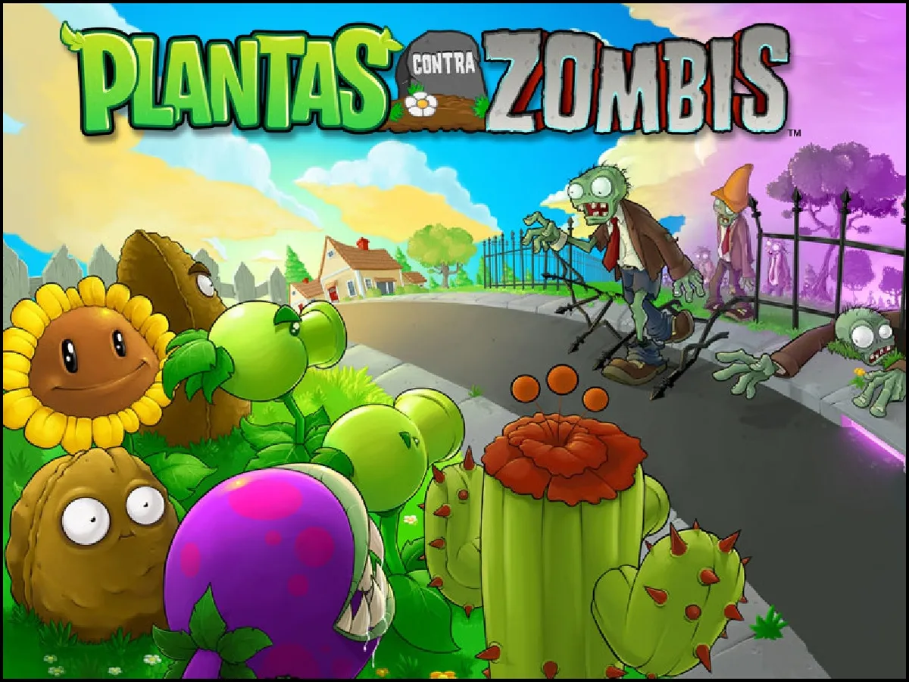
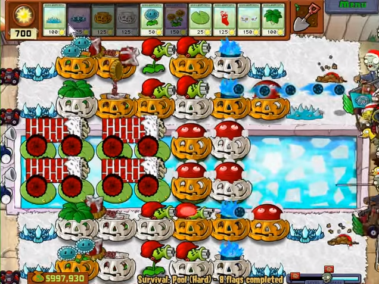
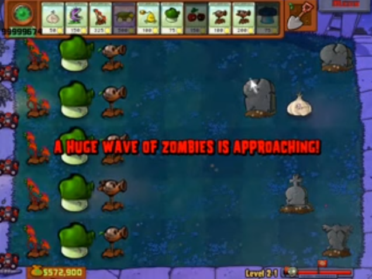
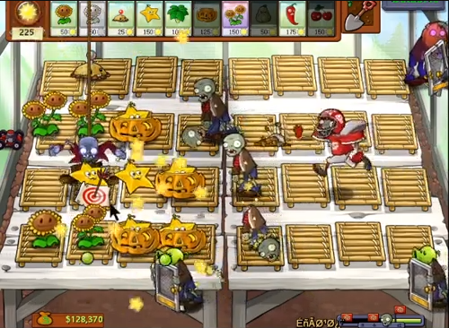
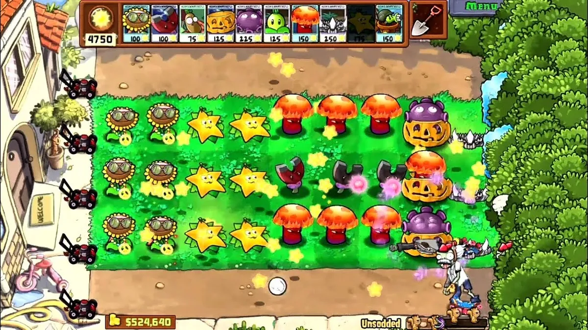
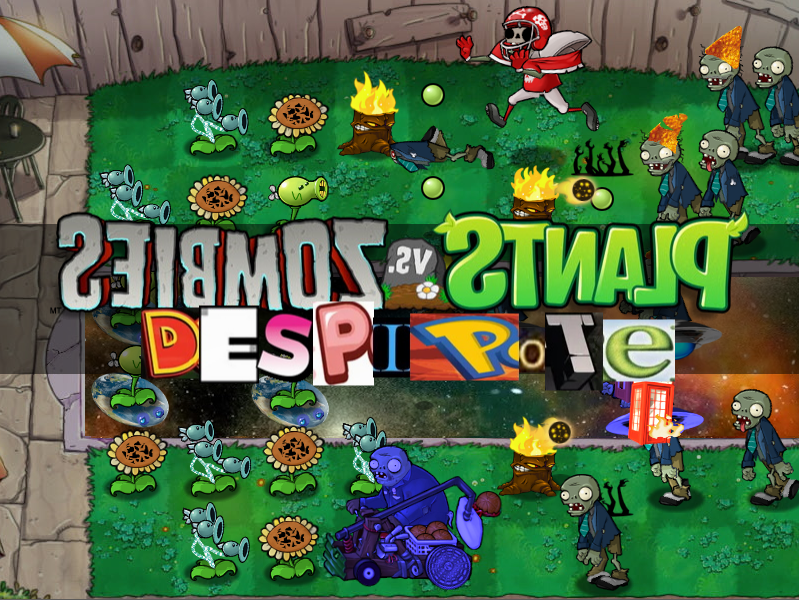

A little introduction
|  |
|---|
|
Surely you know Plants Vs. Zombies, a Tower Defense game released in 2009 extremely popular for its simple, fun mechanics and awarded
with the GOTY (Game Of The Year). A game with such popularity would clearly end up giving rise to a scene of modders, or in other words,
people looking to modify the game. The first modifications or mods of the game simply modified the textures of the game, such as Christmas
and Halloween ones.
|
|  |
| Christmas Mod |
|  |
| Halloween Mod |
|
But, as the years went by, mods started to emerge that were more than just texture packs, changing game mechanics, such as Brutal Mode or Expanded & Enchanted. |
|  |
| Brutal Mode |
|  |
| Expanded & Enchanted |
|
With all this, seeing how there were tutorials on the subject, a google document with a lot of information along with a Discord server (PvZ1 Mod Assosation) with even more content on the subject; on 1/21/2023 I started making my own mod of the game, editing textures and making all kinds of changes to both plants and zombies. |
|  |
| This begins. |
| Main section |
|---|
| Entry 2 |
| Entry 3 |
| Entry 4 |
| Entry 5 |